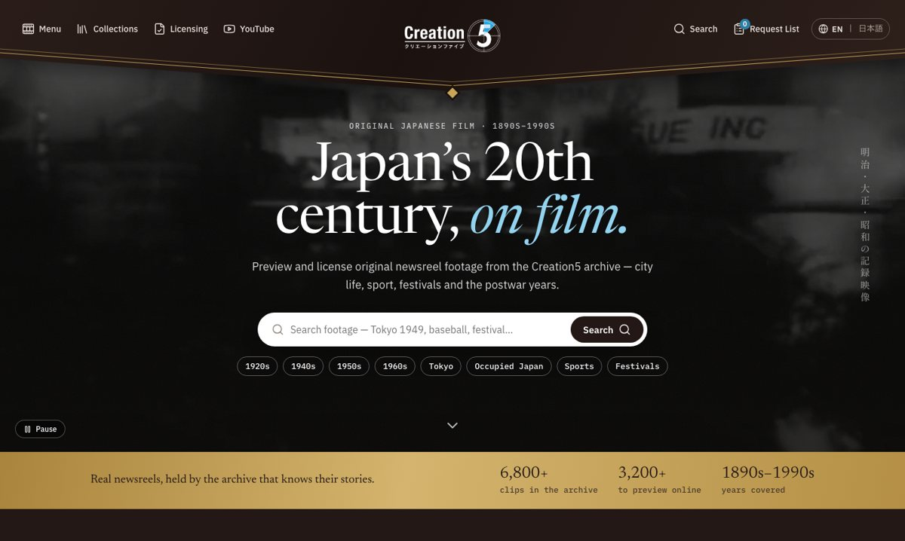
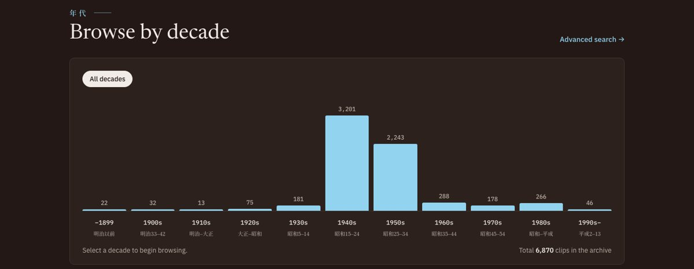
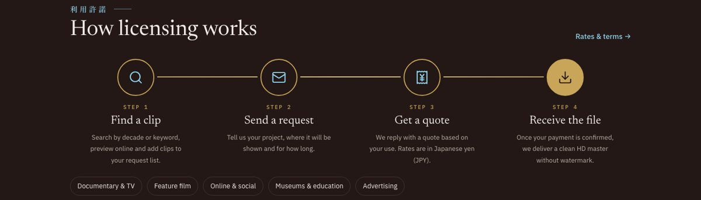

08
Web / デザイン試作
2026
記録映像アーカイブの
英語版サイト（試作）
昭和のニュース映像を所蔵する映像制作会社の、海外向け英語版サイトを試作しました。
海外の研究者や映像制作者が、映像を探してから利用を依頼するまでを迷わず進めるように設計しています。
公開は未定ですが、ポートフォリオへの掲載はご了承をいただいています。



トップ画面・年代から探すグラフ・利用の依頼までの流れ。
設計で工夫したこと
| ねらい | 工夫したこと |
|---|---|
| ひと目で伝わる | 実際のフィルム映像を背景に流し、ロゴを中央に置いたV字の旗のようなヘッダーで、映像アーカイブらしい格調が一瞬で伝わるようにしました。 |
| 探しやすさ | キーワード検索に加えて、年代ごとの本数をグラフで見せ、年代から年へと絞り込めるようにしました。テーマ別のコレクションからも探せます。 |
| 依頼しやすさ | 「探す → 依頼する → 見積もり → 受け取り」の4ステップを図にして、初めての方でも流れが分かるようにしました。 |
| 日本らしさ | 英語の見出しに小さな日本語を添え、縦書きの文字や明朝体で、日本の記録映像らしい雰囲気を出しています。 |
| 海外の目線 | 料金は日本円で見積もることや、使い道（テレビ・映画・ネット・教育など）を依頼の流れと一緒に示し、問い合わせ前の不安を減らしました。 |
AIとの分担
ページの構成と見せ方、文章のトーンは自分で決め、コーディングはAIと一緒に進めました。
英語と日本語の切り替えも含めて、表示は自分の目で一つずつ確かめています。
AIとの仕事のしかたは別にまとめています。
この作品について
| 期間 | 2026年11月 |
|---|---|
| クライアント | 映像制作会社（業務委託先） |
| 担当 | 構成・デザイン・コーディング |
| 使用ツール | HTML / CSS / JavaScript / Claude |
| 状況 | 試作（公開は未定） |